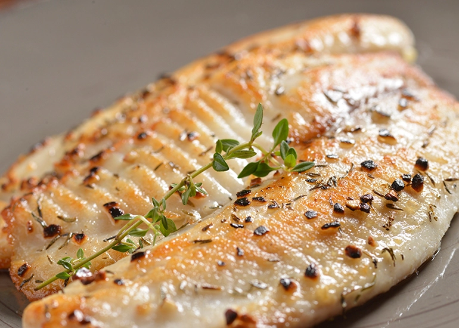

COMIDAS TÍPICAS - CAMPOS DO JORDÃO
FONDUES
Uma das principais comidas presentes na gastronomia da cidade. O prato é composto por uma mistura de queijos emmental e gruyère, os dois principais ingredientes fundidos com vinho. Ele é acompanhado de pão e legumes cozidos. Tais ingredientes são mergulhados com um garfo grande e tais alimentos ficam repletos de queijo.

CALDOS
Por conta do frio na cidade, os restaurantes se especializam cada vez mais em diversos caldos e pratos que envolvam caldos. Eles geralmente são servidos para comer com pão italiano e principalmente muito queijo como acompanhamento.
PEIXE GRELHADO
O peixe grelhado também é um prato muito tradicional no local. O mesmo é encontrado em diversos restaurantes de Campos do Jordão. O prato é acompanhado de truta e salmão, que são peixes típicos e de fácil acesso na região. Geralmente são preparados com molhos de pinhão, alcaparra e pesto.
SALSICHA ALEMÃ
Por ser uma cidade muito conhecida por sua arquitetura europeia, Campos do Jordão também decidiu investir na culinária europeia. A salsicha alemã é um prato típico da Europa e também de alguns pratos alemão.
JOELHO DE PORCO
O joelho de porco é um prato muito tradicional na Alemanha e também em Campos do Jordão. Na cidade, o prato leva acompanhamento de chucrute e três tipos de salsinhas.

RACLETTE
O raclette é ótimo para quem é apaixonado por queijo. O prato é acompanhado de legumes, frios, linguiças e carnes. O mesmo parece muito com a fondue. Uma dica de lugar para visitar é o Restaurante Só Queijo, o local serve raclette e diversos fondues.
BATATA ROSTIE OU ROSTI
A sua preparação é com batata ralada e cozida levemente, após este processo a batata é frita. Geralmente é recheada de legumes, toucinho, carne-seca e queijo. O restaurante Rostie em Campos do Jordão é especialista no prato e possui uma decoração que lembra a Suíça.
BOLOS CASEIROS
O café da manhã e o lanche da tarde na cidade são acompanhados de bolos caseiros, mais conhecidos como bolo da vó, ou seja, bolo de fubá, milho e cenoura, são as principais opções destas refeições.
CHOCOLATE QUENTE
O chocolate quente, tradicional no frio, não pode faltar em Campos do Jordão, em que sua representação é de temperaturas mais baixas. A bebida típica é muito consumida durante o café da manhã e lanche da tarde. Uma ótima opção para esquentar o frio.